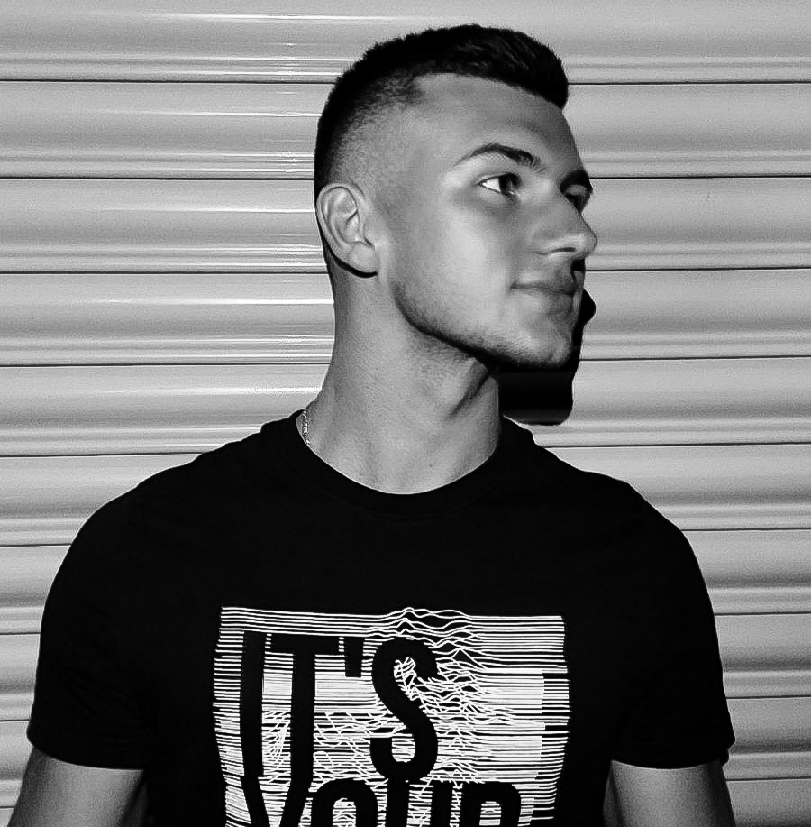

About me
I am Gligorco Gligorov.
I am 19 years old.
I was born in Kocani on 17.09.2001, but I live in Vinica.
Student at the Faculty of Computer Science & Engineering (FINKI).
I chose the PIT course where I study the tools and
principles of project management with significant participation
of information technology, but also application of modern information
tools in the process of
project or enterprise management.
